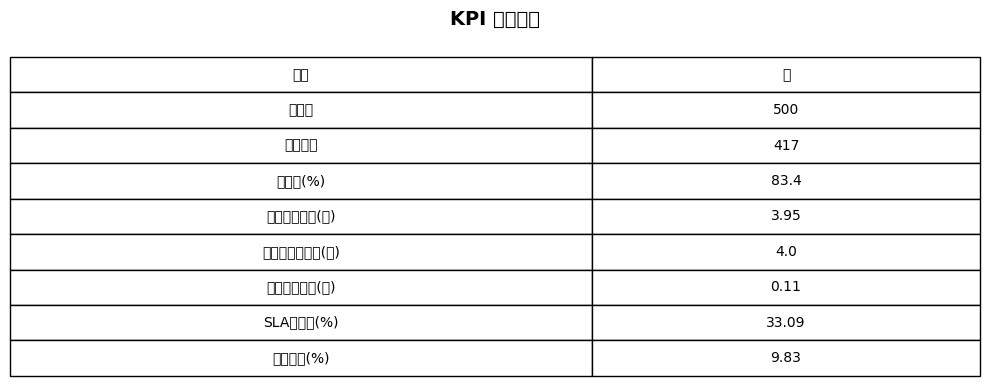
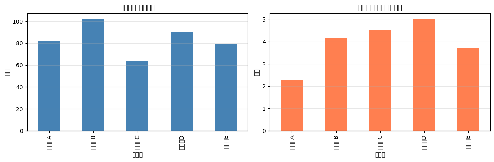
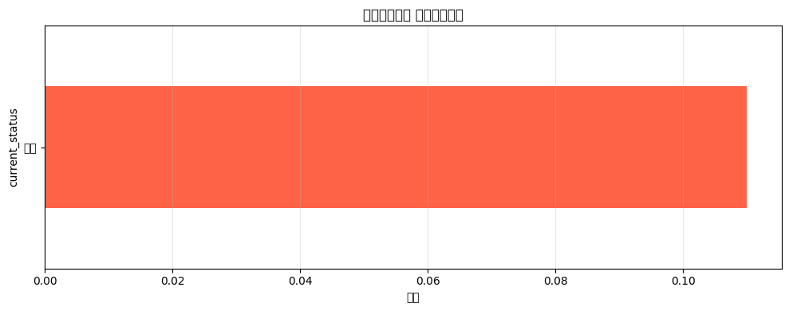

業務プロセスの改善ポイントを自動抽出

各担当者のパフォーマンス指標を比較分析
| 担当者 | 件数 | 平均処理時間（日） | 処理時間SD | SLA超過件数 | 再作業件数 | 再作業率（%） |
|---|---|---|---|---|---|---|
| 担当者A | 82 | 2.28 | 0.89 | 3 | 11 | 13.41% |
| 担当者B | 102 | 4.15 | 0.97 | 35 | 10 | 9.8% |
| 担当者C | 64 | 4.54 | 0.91 | 30 | 6 | 9.38% |
| 担当者D | 90 | 5.02 | 0.94 | 48 | 9 | 10% |
| 担当者E | 79 | 3.73 | 0.91 | 22 | 5 | 6.33% |

業務フローにおける待機時間の分析

負荷偏在指数: 1.59（バランスが比較的取れている状態）
現状: 再作業率 9.83%
対策案: